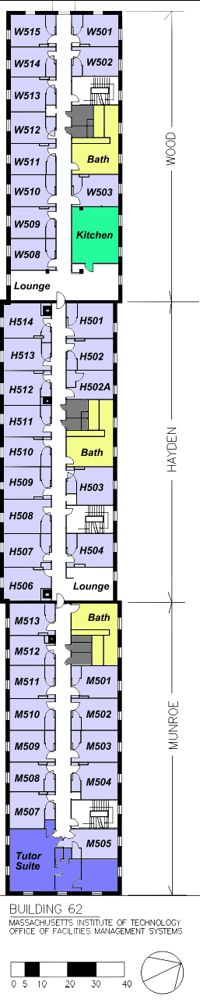

|  |
Layout:Our hall consists of a three sections, connected end to end, each separated by a door (which is almost always propped open anyhow :). Each section varies a bit in personality, though the "separation" doesn't interfere with socialization. Each section has it's own stairwell. About forty people live on the hall all together.
What's in a room?Rooms are filled with one or two people. Each person is allocated an institute bed and matress, bookshelf, and chest of drawers. I say allocated because many replace institute furniture (especially the beds) with purchased items (often futons). The institute furniture is sturdy but not particularly stylish. Almost every room has a large lean-into closet. Every room has a sink! Rooms are not carpeted, though students often buy remnants. Lofts are allowed, as are just about any room modification including painting with one provision-- if the next occupant does not like the modifications, you must undo them, or pay for them to be undone. In practice, rooms with lofts and cool paint-jobs are highly desireable!The rooms have a large (openable) window big enough for a person to readily crawl in and out of. Crawl out of a window!?!? It's not crazy-- there's a ledge immediately outside the window easily wide enough to sit/walk on (of course, only in the case of an emergency... ahem.) The ledge is a feature of the fifth floor. What's bad about the rooms? Not much... There aren't a whole lot of power outlets, but that's easily overcome. The dorm itself is very old-- turn of the century, but it's well maintained and in suprisingly good shape. East Campus is not a handicapped accessible building, as we have no elevator. The four flights of stairs, though, is good exercise!
Features:Scattered about our hall are three co-ed bathrooms. Co-Ed you ask? Isn't that rather wierd? I usually explain it like this: Our hall is a lot like a family, and the last thing on earth you want to see is your sister sitting on the toilet! Everyone respects everyone else, and there has never been a problem. In the interest of responsible behavior, condoms are distributed in the bathrooms.We also have a full kitchen, with several ranges, ovens, refrigerators, and quite a few cabinets which are parceled out at the beginning of the term to our residents. Many students prepare a significant percentage of their meals here (even if that only means reheating a pizza :) The tutor suite is occupied by a graduate student whom the hall selects. The Graduate Residence Tutor (GRT) has few official responsibilities and is not a disciplinarian. The GRT is not our supervisor, but rather a more experienced student and a willful participator (and organizer) in our hall activities. Social activity often is centered around the tutor's suite, because it's big, got lots of fresh air, and an entertaining tutor! Other areas often littered with residents are the lounges. The lounge by the kitchen makes a good place to eat your freshly made meal, while the second lounge is more of a reading or small-group meeting area. Of course, that's just during the worse parts of the school week! On weekends, lounging of a whole different sort takes place-- card players invade the Hayden lounge and parties are (quarterly) held in the kitchen lounge. Yes mom, sometimes alcohol is present, but we look after each other and make sure that nothing gets out of hand. There are scattered storage rooms (grey), which contain nothing interesting unless you like vast piles of extra toilet paper. Other small cubbies appear in the hallway which serve no useful purpose except, perhaps, ambushing passer-by's during water fights (or not during water fights, for that matter :)
Room selectionHow do you end up in a particular room? That varies from hall to hall, but on our hall we use a point system. You get a lot of points for every term you spend on the hall. You get a few extra points if you lived in a double last term. People with the same number of points roll dice to decide who gets to live in a room if more than one person wants one. Consequently, freshmen usually spend their first year in a double, after which it's a battle for the largest single.If you're selecting a room on our hall, there's a lot more to consider than how big it is. Consider these factors:
|